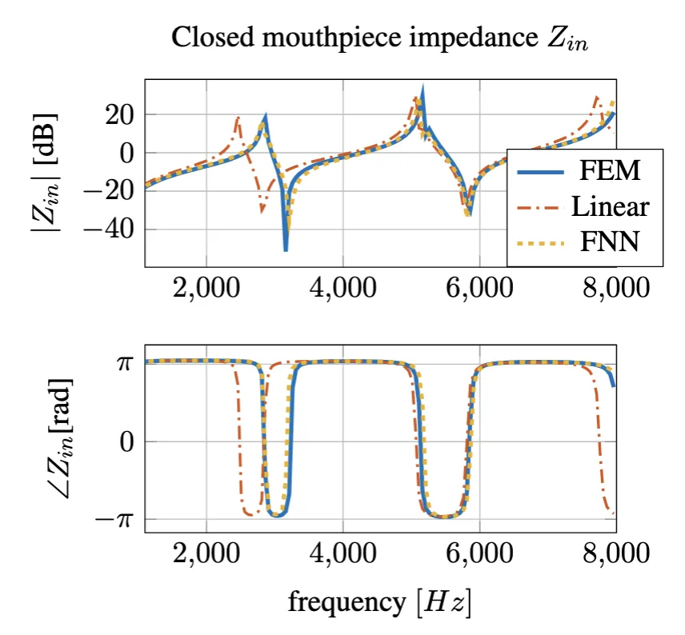
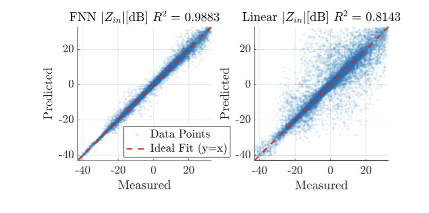

Abstract
We estimate the transfer matrix of a saxophone mouthpiece directly from its geometric parameters. A parametric model generates more than 1,000 mouthpiece geometries by varying chamber and throat cross-sections, shape radii and baffle inclination. Transfer matrices are extracted from FEM simulations, approximated with Chebyshev polynomials, and the polynomial coefficients are predicted by fully connected neural networks, enabling fast prediction for custom mouthpiece design.
Method
Geometric parameterization
Chamber height, throat height, baffle angle and shape radii, varied within ranges compatible with commercial saxophone components.
Transfer matrix method
The mouthpiece is a two-port element with a 2×2 transfer matrix T(ω) relating pressure and volume velocity at its ends.
FEM simulation
COMSOL Multiphysics, Pressure Acoustics in the frequency domain, with boundary conditions set to extract the matrix terms.
Neural networks
Four feed-forward networks (one hidden layer, 10 neurons, tanh, Levenberg-Marquardt) map geometry to Chebyshev coefficients.

Results
| Metric | Neural network | Linear regression |
|---|---|---|
| NMSE |Zin,coupled| [dB] | −55.6 | −39.9 |
| NMSE |Zin| [dB] | −81.1 | −57.1 |
| Average frequency shift [%] | 0.32 | 2.19 |
| R² | 0.9883 | 0.8143 |


Cite this work
G. Greco, X. Luan, A. Bernardini, F. Antonacci, and A. Sarti, “A Data-Driven Transfer Matrix Model for the Design of Saxophone Mouthpieces,” in Proc. Forum Acusticum / EuroNoise 2025, Málaga, pp. 2787–2794. doi: 10.61782/fa.2025.0009
@inproceedings{greco2025mouthpiece,
title = {A Data-Driven Transfer Matrix Model for the Design of Saxophone Mouthpieces},
author = {Greco, Gioele and Luan, Xinmeng and Bernardini, Alberto and Antonacci, Fabio and Sarti, Augusto},
booktitle = {Proc. 11th Convention of the European Acoustics Association, Forum Acusticum / EuroNoise},
pages = {2787--2794},
year = {2025},
doi = {10.61782/fa.2025.0009}
}Dataset: “Saxophone Mouthpiece TM,” Kaggle, 2025. doi: 10.34740/kaggle/dsv/11008015
Supported by the MUSA project (European Union), in collaboration with the Computational Acoustic Modeling Laboratory, McGill University.